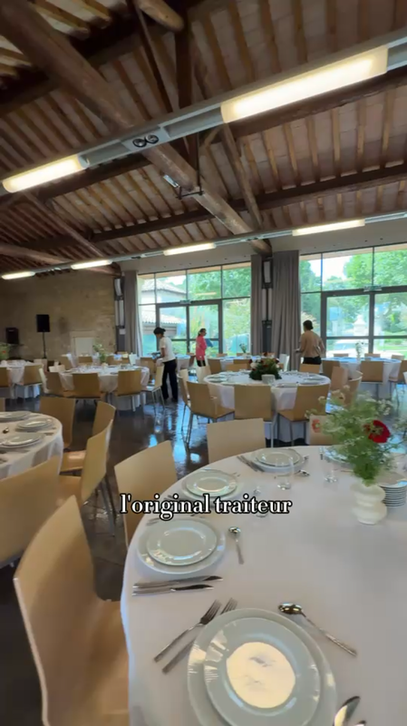
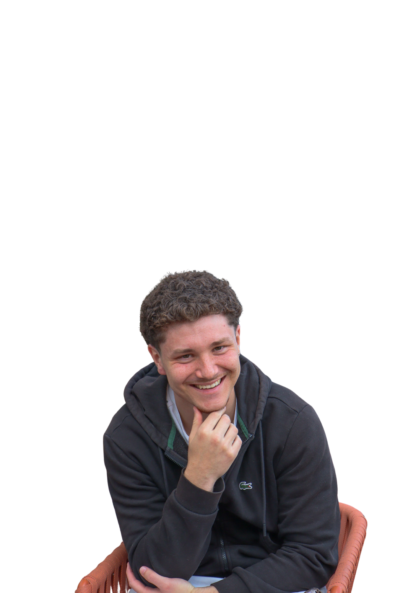

Je ne me contente pas de piloter votre stratégie sociale : j'audite, je planifie et je produis aussi le contenu qui va avec. Un seul interlocuteur, de l'onboarding à la publication.

Chaque collaboration démarre par le même socle : comprendre le compte avant d'y toucher. Clique sur une étape pour voir à quoi ressemble concrètement le document que je produis.
Analyse complète du compte : profil, contenu, légendes, planning, communauté.
Objectifs, audience cible, piliers de contenu et fréquence de publication.
Planning de contenu organisé par pilier, format et date de publication.
Analyse mensuelle des statistiques et ajustement de la stratégie.
En plus de la stratégie, je tourne et monte des vidéos UGC — un vrai plus pour un compte qui a besoin de matière fraîche sans multiplier les prestataires.
Au-delà du tournage, j'ai travaillé la direction artistique globale du compte : cohérence des couleurs, cadrages et rythme de publication, pour que chaque contenu — vidéo, photo plat, portrait d'équipe ou affiche d'événement — soit immédiatement identifiable comme venant du même restaurant.
Une gestion de compte complète, de l'audit initial à la création de contenu.
État des lieux complet du compte : profil, contenu, engagement, communauté.
Définition des objectifs, de l'audience cible et des piliers de contenu.
Gestion quotidienne : publications, stories, modération, interactions.
Tournage et montage de vidéos UGC adaptées à votre univers de marque.
Planification du contenu en amont, format par format, semaine par semaine.
Analyse mensuelle des statistiques et ajustement continu de la stratégie.

Basé à Montpellier, je travaille avec des petites structures qui veulent une gestion de réseaux sociaux cohérente — sans jongler entre un community manager et un créateur de contenu séparés.